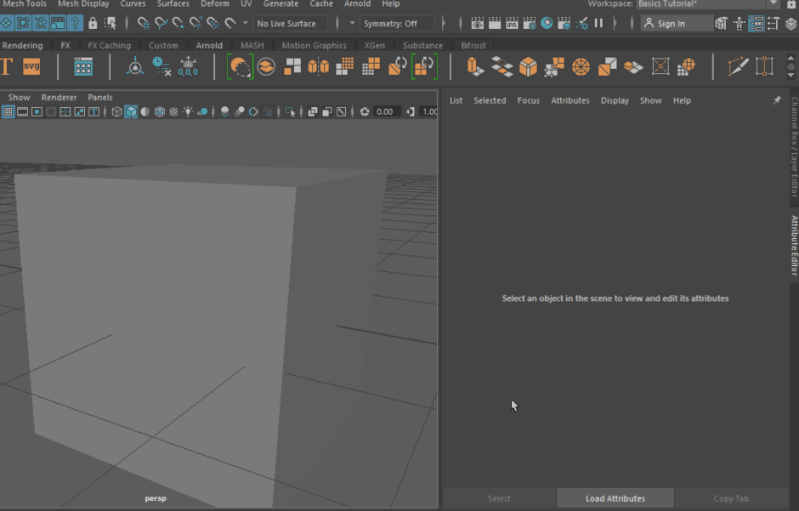

在选定网格的 polyShape 节点上的“平滑网格”(Smooth Mesh)区域和“细分级别”(Subdivision Levels)子区域下，查找这些属性。
可以在 3D 场景视图中设置平滑预览，然后对其进行渲染。
分段级别控制细分网格的原始版本的次数。滑块范围是 0 到 4 之间。值为 0 表示没有平滑，也就是说，渲染的是壳线，而值 4 代表滑块范围中最高的平滑级别。可以在文本字段中输入大于 4 的值，最大为 7。但是，在调整该属性时应谨慎操作，因为每次增加级别，都会将四边形的数量乘以 4。
默认情况下，对预览和渲染使用相同的分段级别。若要使用与预览分段级别不同的渲染分段级别，请取消选择“使用预览级别进行渲染”(Use Preview Level for Rendering)选项，并使用“渲染分段级别”(Render Division Levels)滑块或文本字段来输入所需的渲染分段级别。